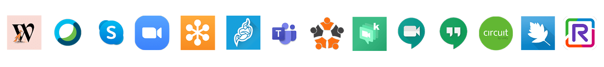
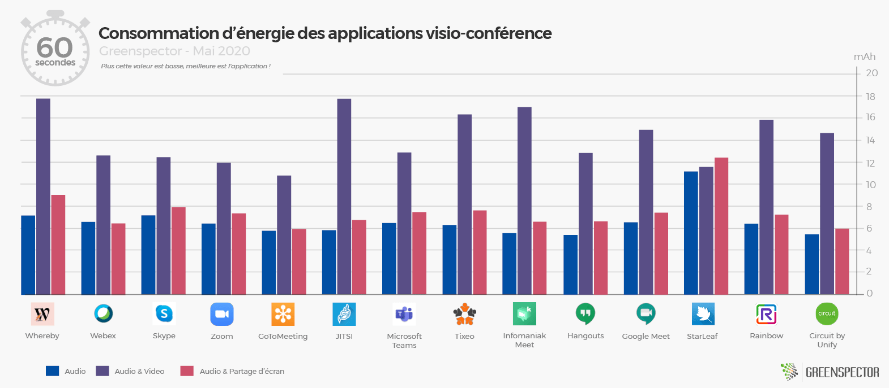
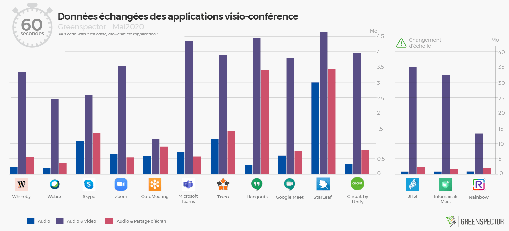
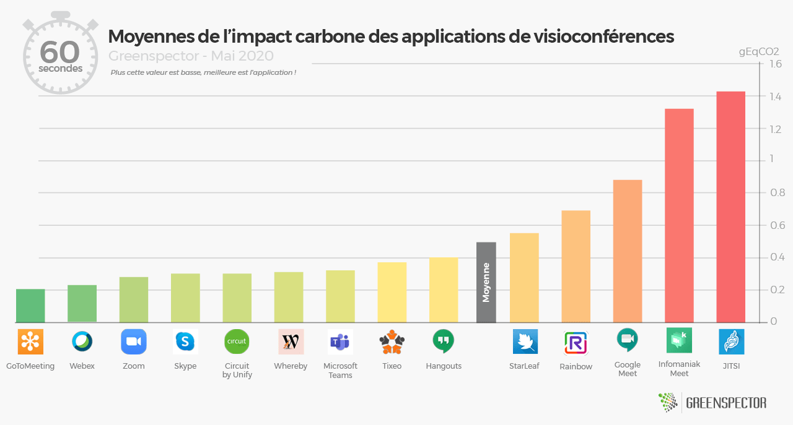
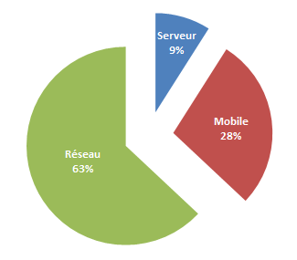
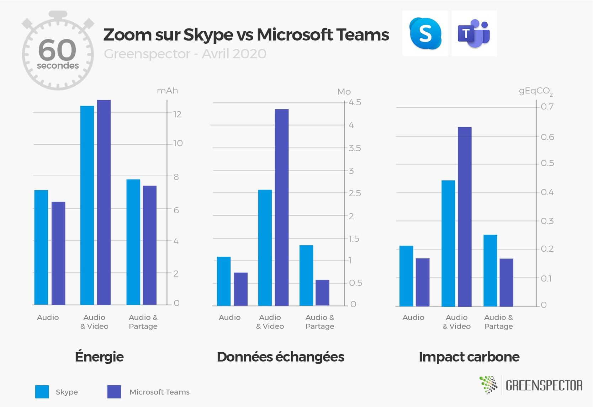
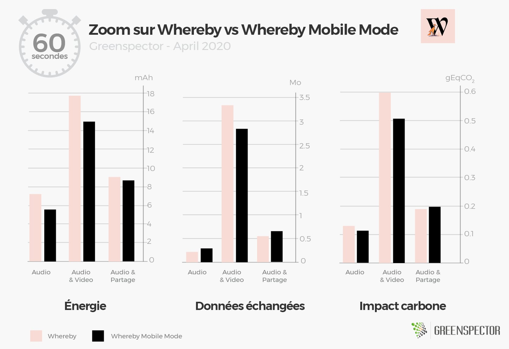
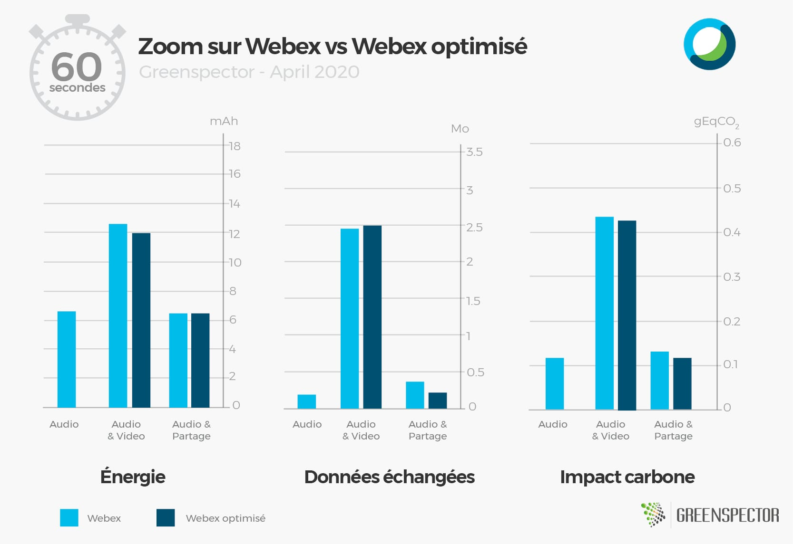
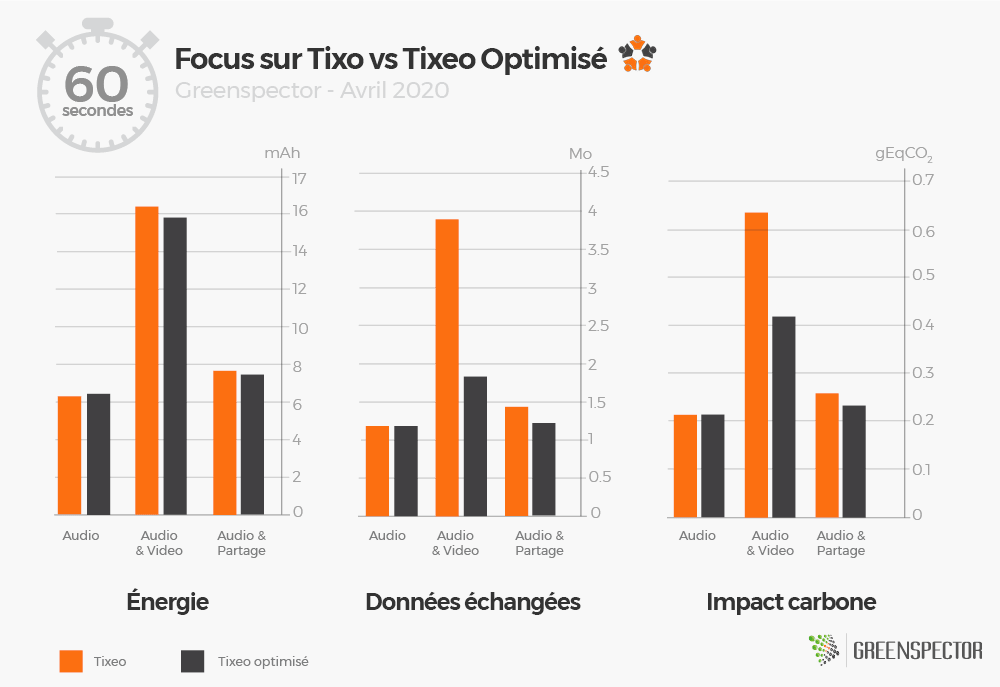
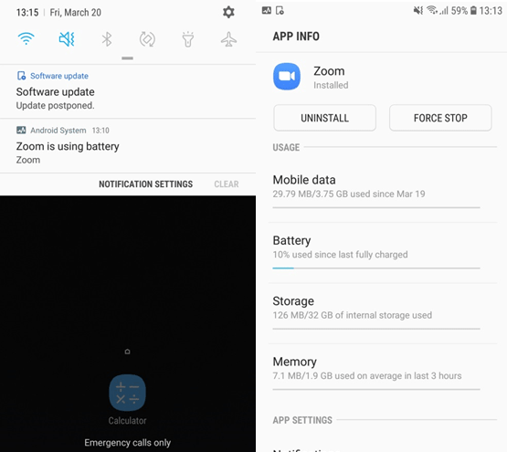

Article mis à jour avec de nouvelles mesures sur StarLeaf, Rainbow, Circuit by Unify le 19 mai 2020.
Article mis à jour avec de nouvelles mesures sur Hangouts et Google Meet le 4 mai 2020.
Article mis à jour avec de nouvelles mesures sur Tixeo et Infomaniak Meet le 23 avril 2020.
Article mis à jour avec de nouvelles mesures sur JITSI et Teams le 15 avril 2020.
Le contexte de confinement actuel augmente mécaniquement l’usage d’outils de collaboration en ligne, en particulier les outils de visioconférence. Ce qui amène à une pression sur le réseau et plus particulièrement à une charge importante sur les serveurs de chaque solution. Il est donc important d’un point de vue efficience mais aussi impact environnemental de choisir la solution la plus sobre en ressources.
Pour cette étude, nous avons choisi de comparer 14 applications de visio-conférence : Whereby, Webex (by CISCO), Skype, Zoom, JITSI, Microsoft Teams, Tixeo, Infomaniak Meet, GoToMeeting, Hangouts, Google Meet, StarLeaf, Rainbow et Circuit by Unify.

Pour chacune de ses applications, mesurées sur un smartphone S7 (Android 8), les trois scénarios suivants ont été réalisés au travers de notre GREENSPECTOR Test Runner, permettant la réalisation de tests manuels sur une durée de 1 minute :
- Conférence audio uniquement en one-to-one
- Conférence audio et vidéo (caméra activée de chaque côté) en one-to-one
- Conférence audio et partage d’écran (screen sharing) en one-to-one
Chaque mesure est la moyenne de 3 mesures homogènes (avec un écart-type faible). Les consommations mesurées sur le smartphone donné selon un réseau de type wifi peuvent être différentes sur un PC portable avec un réseau filaire par exemple.
Mesure de la consommation d’énergie (mAh)

L’application StarLeaf est la plus consommatrice de toutes sur l’ensemble des trois scénarios. Cela est dû au fait que la consommation d’énergie que l’on soit en mode audio seul, audio + partage d’écran ou audio + vidéo est la même. Ceci est un cas particulier de notre étude. L’application GoToMeeting est la moins énergivore, suivie de près par Hangouts, Zoom et Webex.
La consommation en énergie de l’ensemble de ces applications est en moyenne 2,1 fois plus importante quand on ajoute la vidéo à l’audio et à peine supérieure quand on ajoute le partage d’écran à l’audio (+14%). Ce n’est pas une surprise, évitez le partage avec caméra pour moins consommer d’énergie sur vos devices lors de vos visioconférences et économiser votre autonomie et la durée de vie de votre batterie !
Mesure des données échangées (Mo)

GoToMeeting et Webex sont les deux applications qui consomment le moins de données. JITSI et Infomaniak Meet est celle qui en consomme le plus. Globalement et sans surprise on remarque que le scénario audio est celui qui consomme le moins de données. Tandis que le scénario activant le flux audio + vidéo est le plus consommateur.
La consommation en data de l’ensemble de ces applications est en moyenne plus de 10 fois plus importante quand on ajoute la vidéo à l’audio et presque double quand on ajoute le partage d’écran à l’audio (+77%). Ce n’est toujours pas une surprise, évitez le partage de la vidéo et limiter vos partages d’écran pour moins consommer de data sur les réseaux dans le cadre de vos visioconférences ! Il est à noter que ces écarts importants sont dus essentiellement à la consommation importante en audio-video de l’application JITSI avec 35 Mo transférés en 1 minute comparés aux 1,13 Mo pour GoToMeeting ! Le mode optimisé de JITSI (qui permet d’activer une faible bande passante) ne permet pas de réduire cet impact données (33,4 Mo / minute). Infomaniak Meet basé sur le moteur JITSI rencontre la même anomalie de volumétrie en moyenne et principalement sur la partie audio + video sans amélioration avec le mode optimisé.
Projection des données mesurées en impact Carbone (gEqCO2)

Une visioconférence sur mobile est en moyenne 3 fois plus impactante pour l’environnement quand on ajoute la vidéo à l’audio.
La projection en terme d’impacts carbone de l’ensemble de ces applications est en moyenne 3 fois plus importante quand on ajoute la vidéo à l’audio et supérieure quand on ajoute le partage d’écran à l’audio (+35%). Évitez le partage de la vidéo et limiter vos partages d’écran pour moins impacter les infrastructures (réseau, datacenter) et vos devices dans le cadre de visioconférences !

Sans surprise, une grande partie des impacts Carbone se situent sur la partie réseau (63%) mais la partie impacts sur le device (28%) n’est pas à négliger !
Les applications JITSI et Infomaniak Meet tire même la moyenne à 5,8 fois plus d’impact pour l’ajout de la vidéo à l’audio et 40% de plus en ajoutant le partage d’écran.

Dans la battle Skype vs Teams chez Microsoft, les résultats globaux sont très proches (6%). L’Impact Carbone est plus faible pour Skype avec un impact data plus faible mais une consommation d’énergie plus forte sur le mobile que Teams.
Quelles applications permettent d’optimiser la consommation d’énergie et données ?
Seuls Whereby et Webex ont pu être testés sur des fonctionnalités d’optimisation pour la version mobile.
L’application Whereby avec son paramétrage « Mobile mode » permet de limiter la résolution du flux ainsi que d’autres optimisations de consommation de ressources. Quant à l’application Webex, un paramétrage permettant de désactiver la lecture Haute-définition de vidéos uniquement est disponible.
Whereby permet de réduire de 21% la consommation d’énergie côté audio, 15% côté audio et vidéo et 3% côté partage d’écran. Ces gains sont néanmoins faibles au regard des résultats obtenus par l’application la plus consommatrice en mode audio + vidéo de notre panel.

Côté Webex, les gains sont à peine visibles puisqu’uniquement sur la partie vidéo. C’est à peine 5% de gain lors du scénario audio et vidéo côté énergie et impact carbone seulement. Côté données échangées, l’impact est même légèrement supérieur en mode audio et vidéo.

L’application JITSI optimisée ne permet pas d’améliorer l’impact data ou énergie. La consommation en énergie est même supérieure en mode partage d’écran dans ce mode optimisé. On note néanmoins une réduction des données chargées dans ce mode optimisé mais mineur (11% en moyenne). Mêmes constats pour Infomaniak Meet.

L’optimisation des paramètres TIXEO permettent de réduire considérablement l’impact en mode audio + vidéo et lui permet d’être classé 2ème application la moins impactante du panel.
Quant à l’application Zoom, une notification de surconsommation de batterie est apparue à plusieurs reprises lors des mesures. Bien que l’on puisse optimiser la qualité vidéo sur PC, il ne semble pas possible de paramétrer cela sur mobile. Sans cette optimisation, l’application devient l’application la moins sobre en énergie en mode audio+ vidéo.

Les conseils de GREENSPECTOR :
Favoriser l’audio uniquement lors de vos conférences : le flux vidéo (caméra) aura tendance à consommer beaucoup plus. Une conférence sur mobile est en moyenne 3 fois plus impactante pour l’environnement en impact carbone quand on ajoute la vidéo à l’audio. Néanmoins il serait dommage de se priver du partage d’écran qui lui, consomme beaucoup moins que le partage vidéo.
- Nous préconisons aux éditeurs de fournir des options d’optimisation à l’utilisateur et de les rendre les plus accessibles possible voire par défaut.
- Préférez la visioconférence par rapport à un déplacement en voiture !
- Comparaison pour 2 personnes qui se parlent pendant 3 heures en visio + vidéo (1 gEqCO2 en moyenne par minute) alors qu’un des deux a effectué 20 kms (112 g eqCO2 / km en France) aller-retour pour un face-to-face,
- En visioconférence : 180*1*2= 360 gEqCO2.
- En voiture : 112*20= 2,4 kg EqCO2. Soit 6,7 fois plus pour le one-to-one physique.